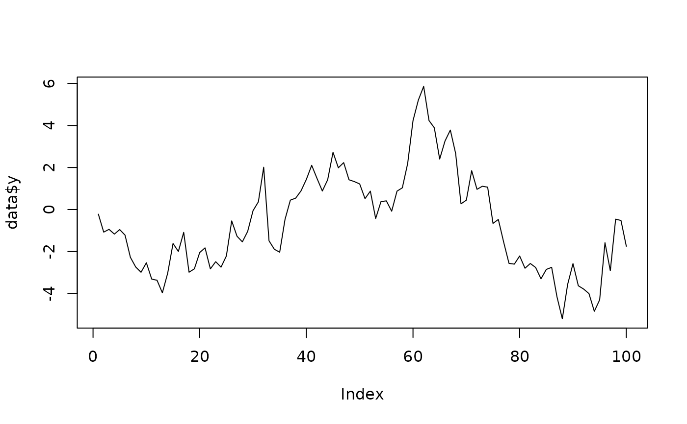

Simulate from a State Space or VARMA Model
sim.RdGenerate a time series from a given process model.
Arguments
- model
- n.obs
sample size (\(N\)).
- rand.gen
an (optional) function to generate the disturbances \(u_t\). Note that
rand.gen()should generate an iid sample of a random variable with mean zero and variance one.- n.burnin
length of an initial "burn-in" phase (denoted with \(N_0\)).
- ...
not used.
- a1
(otional) vector with the initial state (at the start of the "burn-in-phase"). The default
a1 = NULLmeans that a zero initial state is used. Ifa1 = NAthen a random initial state according to the state covariance is generated. Here againrand.genis used. If the model is not stable this covariance is not defined and the procedure will break down.
Value
List with slots
- y
\((N,m)\) matrix with the generated outputs.
- u
\((N,n)\) matrix with the noise.
- a
\((N+1,s)\) matrix with the generated states (\(a_t\), \(t=1,...,N+1\)). Note that this matrix has (\(N+1\)) rows! This slot is only present for state space models.
Details
In order to generate a "stationary" trajectory (of a stable model) one has to chose suitable initial starting values. This is not quite easy, in particular for VARMA models. As a simple remedy, the procedure offers the option of a "burn-in" phase. The length of this phase has to be chosen by the user.
For a state space model, the value of the state at the first time point
may be passed to the procedure as parameter a1.
If a1 = NULL (which is the default value) then a zero vector is used.
If a1 = NA then a random initial state according to the state covariance is generated.
If the model is not stable, this covariance is not defined and the procedure will break down.
Again here rand.gen is used.
If the user would like to have more control on the disturbances
and the initial values, then solve_de() may be used.
Examples
# Random Walk ############################################################################
model = armamod(lmfd(a = c(1,-1), b = 1))
# generate outputs "y"
n.obs = 100
data = sim(model, n.obs = n.obs, y0 = 1)
plot(data$y, type = 'l')

# bivariate ARMA(2,1) model ##############################################################
model = test_armamod(dim = c(2,2), degrees = c(2,1), bpoles = 1, bzeroes = 1)
# generate outputs "y" with zero initial conditions
n.obs = 50
data = sim(model, n.obs = n.obs)
# reconstruct noise "u" from given outputs "y"
data1 = solve_inverse_de(model$sys, y = data$y)
all.equal(data$u, data1$u)
#> [1] TRUE
# bivariate state space model with 5 states ##############################################
model = test_stspmod(dim = c(2,2), s = 5, bpoles = 1, bzeroes = 1)
# generate outputs "y" with random initial state a[1]
n.obs = 50
data = sim(model, n.obs = n.obs, a1 = NA)
# reconstruct noise "u" from given outputs "y"
data1 = solve_inverse_de(model$sys, y = data$y, a1 = data$a[1,])
all.equal(data$u, data1$u)
#> [1] TRUE